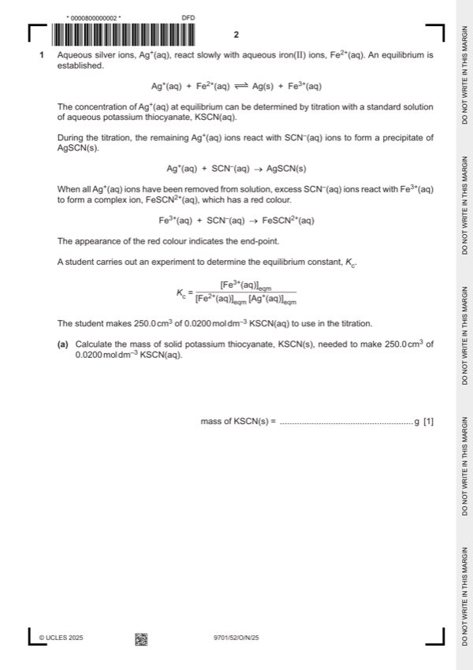

Question 1

Original paper page 2
Part 1(a) — solution
0.486 g 1
Mark points
- Include the ideas shown in the solution above.
Part 1(b) — solution
- [M1] Dissolve the solid / KSCN(s) in (the beaker) (using a small volume of) (distilled) water 3
- [M2] Transfer/add to a (250 cm3 volumetric) flask
- [M3] Top the 250 cm3 volumetric flask up to mark (with distilled water)
Mark points
- [M1] Dissolve the solid / KSCN(s) in (the beaker) (using a small volume of) (distilled) water 3
- [M2] Transfer/add to a (250 cm3 volumetric) flask
- [M3] Top the 250 cm3 volumetric flask up to mark (with distilled water)
Part 1(c)(i) — solution
to avoid oxidation (of contents of flask) 1
Mark points
- Include the ideas shown in the solution above.
Part 1(c)(ii) — solution
to ensure that equilibrium has been reached 1
Mark points
- Include the ideas shown in the solution above.
Part 1(c)(iii) — solution
Silver / Ag 1
Mark points
- Include the ideas shown in the solution above.
Part 1(d)(i) — solution
(yes) 1
and
two titres (2 and 3) are within 0.10 cm³ (of each other)
Mark points
- Include the ideas shown in the solution above.
Part 1(d)(ii) — solution
- = 100 = 0.457%
Mark points
- = 100 = 0.457%
Part 1(d)(iii) — solution
percentage error (in larger titre) is lower 1
Mark points
- Include the ideas shown in the solution above.
Part 1(e)(i) — solution
0.0437 mol dm–3 1
Mark points
- Include the ideas shown in the solution above.
Part 1(e)(ii) — solution
0.00630 mol dm–3 1
University Press & Assessment 2025 Page 8 of 11
9701/52 Cambridge International AS & A Level – Mark Scheme October/November 2025
Mark points
- Include the ideas shown in the solution above.
Part 1(e)(iii) — solution
- [M1] Kc = 0.00630 / (0.04370) 2 = 3.30 1
- [M2] units = dm3 mol–1 1
Mark points
- [M1] Kc = 0.00630 / (0.04370) 2 = 3.30 1
- [M2] units = dm3 mol–1 1
Part 1(f)(i) — solution
No 1
and
As temperature increases, Kc decreases
Mark points
- Include the ideas shown in the solution above.
Part 1(f)(ii) — solution
(data points that obey a line of best fit are reliable because) there are no anomalous points. 1
Mark points
- Include the ideas shown in the solution above.
Part 1(f)(iii) — solution
exothermic 1
and
As temperature increases:
Kc decreases
or
equilibrium shifts to left
Mark points
- Include the ideas shown in the solution above.